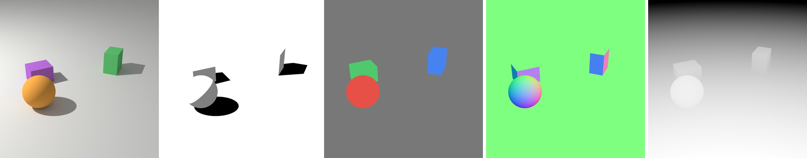
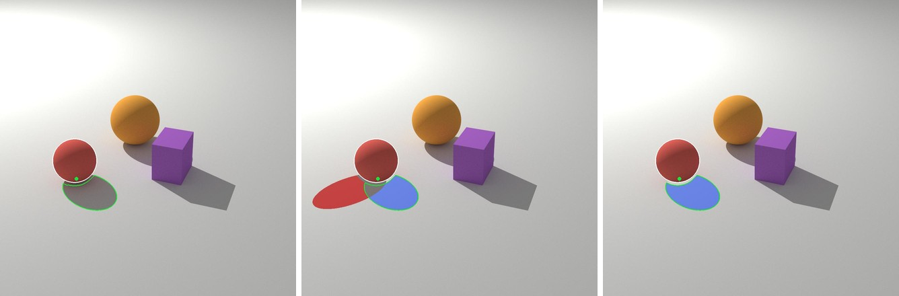

Do Generative Image Models Obey the Laws of Light? Milestone report
The benchmark runs end to end up to the point of calling an image model. We render a scene, give it to a model with one specific instruction, then rebuild the model's output in 3D and render it ourselves to see what the light should have done. Grading against what the model actually drew, instead of one fixed answer image, means a misread prompt is not mistaken for bad physics.

The ground truth is exact. For a sphere on a plane under a point light, the shadow has a closed form. We computed it independently in NumPy for four light positions and compared it with the renderer's mask at 1024×1024: 0 mismatched pixels out of 86,140 shadow pixels.
The insertion checker gives the right verdict. We have not run image models yet, so we built stand-in outputs with known answers for 20 scenes, using the renderer's object and occluder masks: a correct render, the same image with the sphere's shadow moved to where a different light would put it, and the same image with the shadow erased. We also scored the correct image after roughing it up the way a generative model would (blurred, shifted 6 px, dimmed 12%, heavy JPEG).
| Stand-in image (20 each) | Passed lighting | Shadow IoU | Direction error |
|---|---|---|---|
| Correct shadow | 20 / 20 | 0.99 | 0.1° |
| Correct shadow, degraded | 20 / 20 | 0.95 | 0.7° |
| Shadow in the wrong direction | 0 / 20 | 0.09 | 115° |
| No shadow | 0 / 20 | 0.00 | none found |
The verdict matched the label on all 120 images scored (the three kinds, clean and degraded). The recovered sphere centre was within 0.004 scene units of the true one on clean images and 0.06 on shifted ones, for spheres of radius 0.35 to 0.55. These stand-ins come from our own renderer, so they are an easier case than real model outputs.
The geometry score catches a changed scene. For each original object we compare where its colour sits in the output with where it sat in the input. We added two more stand-ins per scene in which the sphere and its shadow are correct but one original object has been moved or removed. All 40 were flagged, and all 60 images with the scene unchanged passed, both clean and degraded. The pass threshold was chosen after looking at these same images, so this is not yet an independent test.

The relighting scorer separates right from wrong. Across 30 scenes (61 objects) we scored the correct render, a degraded copy of it, and the input returned unchanged.
| Image scored | Shadow IoU | Direction error | Within 15° | PSNR |
|---|---|---|---|---|
| Correct render | 0.99 | 0.2° | 100% | exact |
| Correct render, degraded | 0.86 | 3.7° | 100% | 19.7 dB |
| Input returned unchanged | 0.06 | 117° | 2% | 14.9 dB |
PSNR puts the degraded but physically correct image only 4.8 dB above doing nothing, while the shadow metrics keep them far apart. That is the case for scoring shadows directly instead of pixels. Direction is scored for 56 of the 61 objects; for the other five the shadow is mostly hidden or merged with a neighbour's.
We are on schedule for the pipeline and behind on model evaluation. The proposal aimed to have one task scored on two models by now; the scenes, ground truth, tasks and scorers are done, but no model has been run.
We changed how we score. Our TA pointed out that when a model adds an object, its 3D position is not determined by the 2D image, so there is no single correct answer image. We now constrain the edit (a sphere resting on a known floor, seen by a known camera, has only three unknowns) and reconstruct what the model drew before judging it. Reconstruction handles spheres only so far, and both scores rely on our objects having distinct, saturated colours. We have 20 insertion tasks and 30 relighting pairs (140 renders) against 100 scenes planned for week one.
| When | Work |
|---|---|
| Nov 23–26 | Run insertion and relighting on at least two image-editing models. Extend reconstruction to boxes and grow the dataset to about 200 tasks. |
| Nov 27–Dec 3 | Add the two other light effects we want to measure. Indirect light: a white object beside a coloured wall, scored on the colour that should bleed onto it. Reflective materials: implement mirror reflection in the path tracer, then score whether a reflection appears in the right place. Run 4 or more models and hand-label about 150 outputs to check the automatic scores. |
| Dec 4–8 | Leaderboard, failure gallery, final report and video, presentation. |